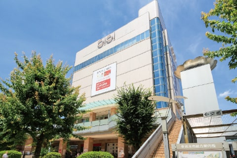

-
マルイファミリー志木／
約750m～810m 営業時間
10:00～21:00
ファッションを中心に幅広いアイテムを揃える全７フロアの駅前ショッピング施設。まるい食遊館も入っています。
※イメージ
「志木」駅周辺には大小さまざま、多種多様なジャンルの商業施設が集まっています。駅前にある「マルイファミリー志木」は、食料品から生活雑貨、ファッションまで揃い、レストラン街もあるため、休日には家族連れで賑わいます。 「エキア志木」は、仕事やお出かけの行き・帰りに気軽に利用できる飲食店の数々をはじめ、書店や「成城石井」も日常に。便利なだけでなく、毎日を快適に演出してくれるエキナカ施設です。
マルイファミリー志木／
約750m～810m
営業時間
10:00～21:00
ファッションを中心に幅広いアイテムを揃える全７フロアの駅前ショッピング施設。まるい食遊館も入っています。
EQUiA志木／約820m～880m
EQUiA志木／約820m～880m
営業時間
10:00～21:00
カフェやレストラン、生活雑貨にファッションなど約40店舗を擁する毎日を快適に演出してくれるエキナカ施設。
ヴェルモ志木／約220m～280m
ヴェルモ志木／約220m～280m
営業時間
9:00～22:00
徒歩4分！普段使いのヤオコーをはじめ、ドラッグストア、100円ショップ、医院まで揃うショッピングモール。
カスミフードスクエア志木／
約750m～810m
営業時間
9:00～24:00
24時まで営業している品揃え豊富なスーパー。お惣菜・お弁当も充実しています。
いろは親水公園／約1.2km
駐車場
志木市役所の駐車場が利用できます（無料）
志木市役所の駐車場が利用できます（無料）
「新河岸川」と「柳瀬川」が交差する場所に広がる「いろは親水公園」は、2022（令和4）年8月にリニューアルを実施し、これまで以上に過ごしやすい公園へと生まれ変わりました。中洲、右岸、左岸と3つのエリアに大きく分かれており、中洲公園には芝生広場とベーカリーがあります。右岸では四季の花々や夏には蛍を見ることができます。一番の目玉は左岸ゾーンに設置されたウォーターパークで、夏はバシャバシャ池のように、冬には複合遊具として遊べます。
カパルデザインのウォーターパーク
（左岸ゾーン）
運営時間
10:00～16:30
無料で利用できる大人気のウォーターパーク！大きなバケツに水がたまると…バッシャーン‼楽しい時間になること間違いなしです。サンダルと水着着用で遊べます。（夏季期間：7月～9月）
Bakery&cafe DAiSY
（中州ゾーン）
営業時間
8:00～19:00
（3月～10月）
志木市役所の向かいにある大人気のベーカリー。パンが約150種類、洋菓子が約50種類、常時並んでいます。店内だけでなくテラスや川沿いのベンチも利用できます。（冬期間：18:00まで）
いろはパーク（左岸ゾーン）
カパルの滑り台・白いふわふわの遊具があります。またトイレには、おむつ替え台もあるので安心です。
旧村山快哉堂（中州ゾーン）
新しい施設と歴史を感じる「旧村山快哉堂」の新旧が融合した素敵な場所です。裏手には芝生広場もあります。
志木市役所
利用時間
8:00～18:00（全日）
駐車場
無料
利用台数
車:95台 自転車:50台
柳瀬川桜堤／約1.5km
志木市では川を舞台とした地域活性化と健康増進事業と題し、魅力ある水辺空間に新たな人の流れを創出する「川の国埼玉はつらつプロジェクト」を推進中です。その中のウォーキングコースの一つが「柳瀬川桜堤」です。柳瀬川の土手沿いに桜が植樹されており、春には多くの人で賑わいます。川沿いの澄んだ空気と心地よい風を感じながら、お花見を楽しめます。
川沿いに約160本のソメイヨシノが植えられています。お花見時には出店が並びます。
東武東上線の電車と桜のコラボもまた素敵。夜にはライトアップされて幻想的です。
樹齢400年の古木で、市の文化財として指定されています。この桜は世界に一つだけの新種のようです。
志木市立 志木第三小学校
約510m～570m（徒歩8分）
志木市立 志木中学校
約750m～810m（徒歩11分）
いろは遊学図書館
約650m～710m（徒歩9分）
みわ幼稚園
約80m～140m（徒歩2分）
ウェルネス保育園志木
約290m～350m（徒歩5分）
ぷりえユリノ木園
約450m～510m（徒歩7分）
最寄りの「志木」駅は「池袋」駅へ直通21分の東武東上線急行、準急停車駅。
さらに東急東横線乗入れの東京メトロ副都心線で、「渋谷」「横浜」方面へダイレクトアクセス。
東京メトロ有楽町線は「有楽町」「銀座」「豊洲」方面へダイレクトにアクセスできます。
ビジネスからショッピングまで都内を縦横無尽に愉しめる立地です。
急行停車駅なので、平日朝の運行本数が多く、都心への通勤・通学も快適です。
また始発電車も利用できるので、ゆっくり座って通勤できます。朝の移動時間に読書をしたり、スマホを見たり、自分の時間をつくれます。終電は「池袋」「新宿」「渋谷」「大手町」「銀座」など、午前0時を過ぎても最終電車で帰れる駅が多いので、遅い帰宅時も嬉しい環境です。
※掲載の電車所要時間は、乗換え時間 等 を含んだ通勤時 のものです。 通勤時は ７:３０～９:３０ に到着する電車を表記しています。（ Yahoo! 路線情報２０２４年 7月版調べ） ※池袋駅へは東武東上線を利用。※新宿駅へは池袋駅でJR湘南新宿ラインに乗換。※渋谷駅へは池袋駅でJR埼京線に乗換。※東京駅へは池袋駅で東京メトロ丸の内線に乗換。 ※豊洲駅へは池袋駅で東京メトロ有楽町線に乗換。※横浜駅へは池袋駅でJR湘南新宿ラインに乗換。
「志木」駅南口の乗り場から毎日運行。電車を乗り換えることもなく、重い荷物を持ち運ぶ手間も省けます。
旅行や出張も空港連絡バスで快適です。この他にも、京都・大阪方面へのお出かけに便利な高速バス「VIPライナー」が「志木」駅東口から運行しています。21台発で、翌朝には到着！長距離の移動も快適です。